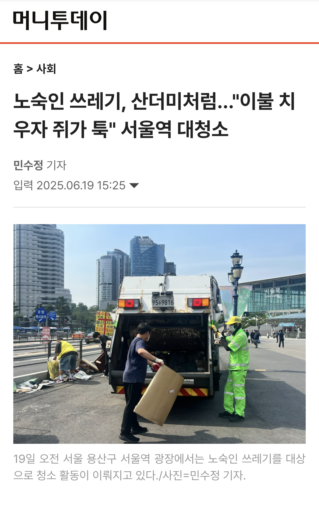

보통 노숙자하면 상주구역 외진곳이나 음지가되버린 낙후된곳 , 길거리에 있어야할은데
전세계적으로 나라들은 노숙자들 그나마 덜꼬이게하기위해 주변분위기를 밝게하거나 , 사람이붐비고 , 이벤트 행사로 눌러앉기 힘들게 대처하는등 노력 하는경우가 많지만
여기는 상주하는놈들이 내성률100%에 달함
역에는 백화점과 , 복잡하게 붐비는 유동인구 , 매주마다 광화문 까지 행진하는 시위대들 , 예수쟁이 큰스피커로 음악 틀어놓기
정도에 끄덕도안함 오히려 심심할일 없으니까 술판깔고 눌러앉고 배고프면 서울역 상가안 밥까지 사먹는 주상복합 역세권 그자체가됨.
그냥 서울역 한복판 전광판 기둥앞에 사람붐비는곳에서도 이불깔고 잠을 잘잠
노숙자들이 빨래랑 목욕만 잘 하면 난 괜찮다고 봄
근데 저 씨발새끼들 빨래 목욕은 안 하는데 술은 처마시더라 돈 어디서 남?? 그리고 술처마실 돈은 있는데 빨래 목욕은 왜 안 함?? 사회의 암덩어리 벌레새끼들 진짜